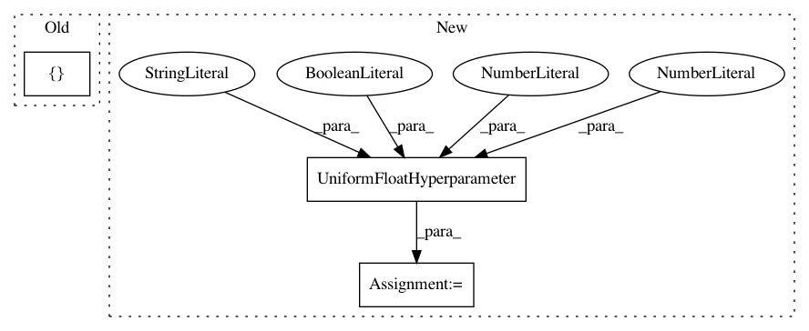

84ac1e439158fed286a8b6ef8de3ae8826575f85,autosklearn/pipeline/components/classification/gradient_boosting.py,GradientBoostingClassifier,get_hyperparameter_search_space,#Any#,126
Before Change
max_depth = UniformIntegerHyperparameter(
name="max_depth", lower=1, upper=10, default_value=3)
criterion = CategoricalHyperparameter(
"criterion", ["friedman_mse", "mse", "mae"],
default_value="mse")
min_samples_split = UniformIntegerHyperparameter(
name="min_samples_split", lower=2, upper=20, default_value=2)
After Change
max_leaf_nodes = UniformIntegerHyperparameter(
name="max_leaf_nodes", lower=3, upper=2047, default_value=31, log=True)
max_bins = Constant("max_bins", 256)
l2_regularization = UniformFloatHyperparameter(
name="l2_regularization", lower=1E-10, upper=1, default_value=1E-10, log=True)
early_stop = CategoricalHyperparameter(
name="early_stop", choices=["off", "train", "valid"], default_value="off")
tol = UnParametrizedHyperparameter(
name="tol", value=1e-7)
In pattern: SUPERPATTERN
Frequency: 3
Non-data size: 3
Instances
Project Name: automl/auto-sklearn
Commit Name: 84ac1e439158fed286a8b6ef8de3ae8826575f85
Time: 2019-08-05
Author: guilherme.miotto@gmail.com
File Name: autosklearn/pipeline/components/classification/gradient_boosting.py
Class Name: GradientBoostingClassifier
Method Name: get_hyperparameter_search_space
Project Name: automl/auto-sklearn
Commit Name: 84ac1e439158fed286a8b6ef8de3ae8826575f85
Time: 2019-08-05
Author: guilherme.miotto@gmail.com
File Name: autosklearn/pipeline/components/regression/gradient_boosting.py
Class Name: GradientBoosting
Method Name: get_hyperparameter_search_space
Project Name: automl/auto-sklearn
Commit Name: 35a9d4d6148f5933db0e3dfda23d8f0acf0403ba
Time: 2014-11-14
Author: feurerm@informatik.uni-freiburg.de
File Name: AutoSklearn/components/classification/liblinear.py
Class Name: LibLinear_SVC
Method Name: get_hyperparameter_search_space